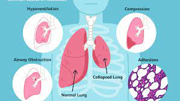

Pneumothorax or Atelectasis

CAUSES
- Surgery: Surgery is the most common reason people develop atelectasis. Medicine to keep you asleep during surgery (anesthesia) can affect your ability to breathe normally or cough. Pain after surgery could make deep breaths painful. Continued shallow breathing because of the pain can lead to deflated air sacs.
-
Chest pressure: Pressure from outside the lungs can make deep breathing difficult. This type of pressure can come from a tumor or other growth, a deformed bone, or a tight brace or body cast. If the cause of the pressure is not clear, your doctor will do additional tests to identify its source.
-
Blocked airway: A blocked airway can also cause atelectasis. If air cannot get past the blockage, the affected part of the lung could collapse. Mucus or an inhaled object could cause a blockage.
-
Other lung conditions: Other medical conditions involving the lungs can also be associated with atelectasis. These disorders could include lung cancer, pneumonia, pleural effusions (fluid around the lungs) and respiratory distress syndrome (RDS).
SYMPTOMS
When this happens, uncomfortable symptoms can occur, including:
- Trouble breathing (shortness of breath)
-
Increased heart rate
-
Coughing
-
Chest pain
-
Skin and lips turning blue
DIAGNOSIS
To diagnose atelectasis, doctors usually start with X-rays (a test that provides pictures of the inside of your chest). Another test called a computed tomography (CT) scan can provide more detailed pictures.
In more severe cases, a doctor may use a procedure called a bronchoscopy to see inside your airway. In this test, the doctor sends a small tube called a bronchoscope down the throat to look for a blockage or other issue. The test is fairly painless. If a blockage is found, your doctor may be able to remove it during the procedure.
TREATMENTS
The most common causes of atelectasis and their treatments include:
- Surgery: Nurses or respiratory therapists will guide you in breathing exercises and sitting or standing upright as soon as possible after surgery.
-
Chest pressure: Using surgery or medicine, doctors can remove the source of the pressure.
-
Blocked airway: Usually, during a bronchoscopy, doctors will remove the blockage so you can breathe freely again.
-
Lung condition: Doctors may treat the condition with medicine or a procedure to relieve pressure on your lung.